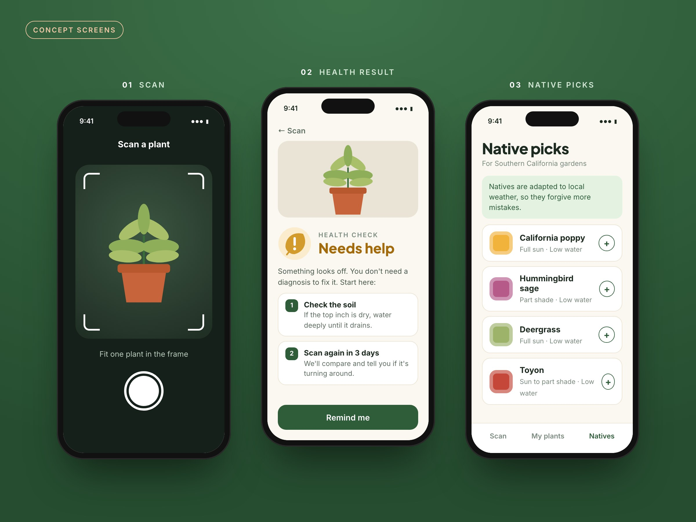
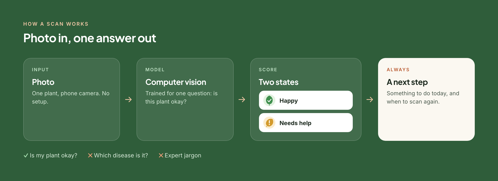
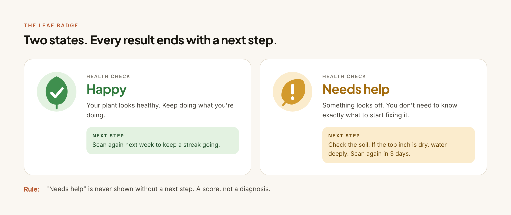

Gardening Assistant
Most people don't kill plants on purpose. A simple app that tells you how your plant is doing and what to plant next.

Concept screens: scan, health result, native picks.
01 / The Problem
Plant advice is written for people who already know plants.
Online plant advice is either too generic ("water when dry") or too expert (pages of disease names and photos you have to match yourself). Neither helps someone staring at a sad-looking plant on their windowsill.
Problem statement Beginners want one answer: is my plant okay? And if it isn't, what do I do right now?
02 / Research & Findings
What we're designing around.
We're early. These are the assumptions shaping the first version, not findings yet.
Advice is too generic or too expert
There's not much in between for someone who just wants to keep one plant alive.
Beginners want one answer first
"Is it okay?" comes before "what's wrong with it?"
Disease ID is a hard first step
Hard to train in a semester, and not what beginners ask for first.
Native plants are easier to keep alive
They're adapted to local weather, so they forgive more mistakes.
A bad score alone just causes worry
"Needs help" with no next step is worse than no answer at all.
The camera is the easiest input
Pointing a phone at a plant is easier than describing what's wrong with it.
03 / Strategic Insights
3 principles that shape the design.
- A score, not a diagnosisAnswer the beginner's actual question before trying to be a plant doctor.
- Native plants are easier to keep aliveSo recommending them is part of the product, not a side feature.
- "Needs help" always comes with a next stepNever leave someone with a bad score and nothing to do.
04 / The Solution
Scan it, get a score, know what to do.
The Gardening Assistant monitors plant wellbeing, uses computer vision to score health as "happy" or "needs help," and recommends native plants. The health indicator is a leaf badge: upright and green when things are fine, drooping and amber when they're not.

